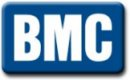
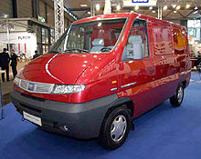
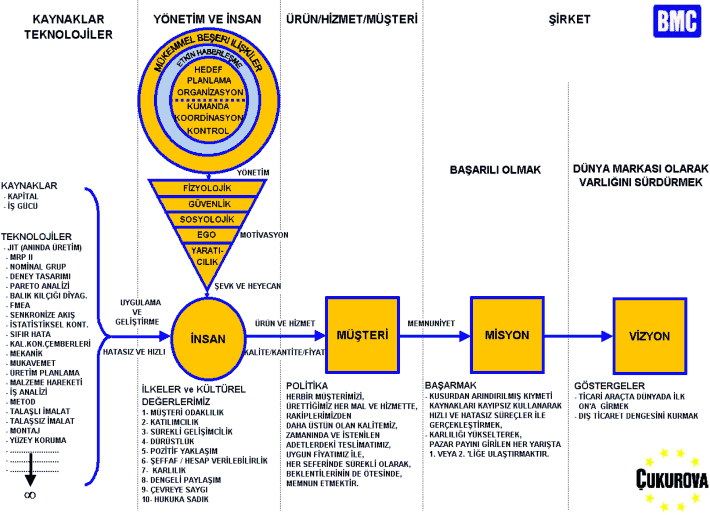
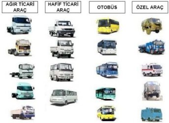
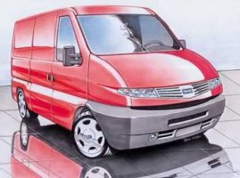
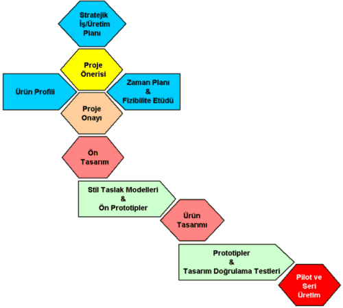

Muharrem
Erkan
BMC, Genel Müdür Muavini
22 Ekim 2004 Sabancý Center, Ýstanbul
*Bu rapor Otomotiv Sanayiinde Ýþbirlikleri II:
"Endüstriyel
Tasarým ve Ürün Geliþtirme"
konferansýnda yapýlan sunumdan derlenmiþtir.
Giriþ:
Efendim
bu toplantýya katýldýðýnýz için hepinizi saygý ve sevgiyle
selamlýyorum.
Ben
kürsüye baðlý kalmak istemediðim için, biraz serbest dolaþmak
ihtiyacýyla bu þekilde sizlere hitap edeceðim. Sevgi, saygý
ve bilgi paylaþtýkça zenginleþen çok güzel kavramlardýr.
Ben de sevgimi, saygýmý ve bilgimi sizlerle paylaþma ortamý
saðladýðý için, Sabancý Üniversitesi ve TÜSÝAD kuruluþlarýna
çok teþekkür ediyorum.
Biz
bu yýl BMC Sanayi ve Ticaret A.Þ. olarak, 40. kuruluþ yýlýmýzý
idrak ediyoruz. Bu yýl "Megastar" adý altýnda
yeni ürünümüzü bugünlerde piyasaya sunduk. Sanýyorum reklamlardan
izliyorsunuzdur?
Otomotiv
sanayii içerisinde BMC biraz deðiþik bir örnek olarak yer
alýyor. BMC tamamýyla baðýmsýz, %100 Türk sermayesiyle kurulmuþ
bir þirket.
Baðýmsýzlýk
inanýn çok güzel bir þey. Baðýmsýzlýk demek karar verme
özgürlüðü demek. Karar vermek, yaparak öðrenmek demek. Kendi
kendine öðrenen bir teþkilat olmak demek. Ama bedeli de
aðýr, gerçekten zorluklarý var. Bedeli baþarýlý olmaktan
geçiyor; Baþarýlý olmak zorundasýnýz, baþarýyý mutlaka yakalamak
durumundasýnýz.
Ben
"Megastar"ýn nasýl doðduðunu sizlere anlatýrken
hangi ortamdan, hangi altyapýdan ortaya çýktýðýný anlatmakla
söze baþlamak istiyorum. Bu anlatacaklarým biraz gizemli,
her yerde konuþulmayan BMC gerçekleri ama bu bilgiyi sizlerle
paylaþmak bugün benim için zevk olacak.
BMC,
Çukurova Grubu'na ait inþaat ve sanayi sektörü içerisinde
yer alan bir þirket. Kendi bünyesinde 5 temel sektörden
oluþuyor; hafif ticari araç, aðýr ticari araç, savunma sanayi,
özel projeler ve otobüs. Bugün konuþacaðýmýz "Megastar"
hafif ticari araç sektörünün bir ürünü.
BMC'nin
bütünlüðü aynen bir "iceberg" gibidir. Su üstündeki
kesimi görünen kýsmýdýr. Ancak suyun altýnda BMC'den çok
daha büyük bir gerçek var. Bu gerçek imalatçýlarýmýz, satýþ,
servis, yedek parça teþkilatýmýz ve müþterilerimizden oluþmaktadýr.
Ýmalatçýlarýmýza
baktýðýmýz zaman yurt içinde 316, yurt dýþýnda 135 imalatçýyla
birlikte çalýþýyoruz. Bugün benden sonraki prezantasyonda
müþterek geliþtirme çalýþmalarýmýzdan bir örnek olan Farplas
þirketi yer alacak.
Satýþ
teþkilatýmýza baktýðýmýz zaman 64 yetkili satýcýmýz, 175
yetkili servisimiz ve 220 yedek parça bayimizle birlikte
bir bütün teþkil ediyoruz. Þu anda 3000 kiþiyiz. Her BMC
çalýþanýna "iceberg"in altýnda 5 kiþi düþüyor.
Bu 15.000 çalýþan demektir. Aileleriyle birlikte 60.000
kiþilik büyük bir aile.
Biraz
BMC'nin bedenine bakarsak, her canlý organizmada olduðu
gibi þirketlerin de inanýn canlý organizmalarla mukayese
edilebilecek bir bedeni ama ondan da önemli, o bedene iþ
yapmayý saðlayan iþletim sistemi veya ruh gerekiyor.
Baþ
tacýmýz olan müþterilerimizdir. Potansiyel ve mevcut müþterilerimizi
pazarlama ve satýþ teþkilatýmýz þemada görüldüðü gibi kucaklar.
Þemada gördüðünüz bütün oklar haberleþme aðý demektir. Müþterilerimize
iþ ve hizmet üretiriz.
Ýþ
merkezlerimiz demin söylediðim gibi hafif ticari araç, aðýr
ticari araç, otobüs, özel projeler ve savunma sanayidir.
Bunlar ana araç üreticileridir. Bunlarla birlikte gövde
üretim tesisleri, motor aktarma organlarý ve döküm olmak
üzere teknolojik iþ merkezleriyle birlikte toplam 8 iþ merkezinden
oluþur. 8 iþ merkezine destek veren ve onlarýn baþarýlý
olmasýný saðlayan, kurmay fonksiyon icra eden 10 adet de
hizmet merkezimiz var. Bunlar Planlama, Lojistik, Araþtýrma
Test ve Belgelendirme, Kalite Güvence, Servis, Stratejik
Planlama, Ýnsan Kaynaklarý, Bütçe ve Mali Kontrol, Tesis
Bakým gibidir.
Burada
bir noktaya deðinmek istiyorum, araþtýrma geliþtirme faaliyetleri
BMC bünyesinde sadece ürünle sýnýrlý deðildir.
Haddizatýnda
ürünün oluþmasýnda etken olan, diðer hizmet merkezlerinin
bünyelerinde de Ar-Ge faaliyetleri vardýr. BMC'de yeniden
yapýlanma projesi örnek olarak tamamen insan kaynaklarý
sistemi bünyesindeki bir araþtýrma geliþtirme faaliyetinin
eseridir. 1999 yýlýnda þirket yeniden yapýlanmasýný yine
bir ürünü gibi kendi bünyesinde tasarlamýþ ve geliþtirmiþtir.
Bu
þekilde 10 hizmet merkezi ve 8 iþ merkeziyle birlikte bir
bütünlük içerisinde çalýþmaktadýr.
Fakat biraz sivil toplum örgütleri gibi BMC'nin bünyesinde
gönüllü kuruluþlar da vardýr. Bunlar yasal deðil ama gönüllü
olarak bir araya gelen, kalite, mamul, proses, lojistik,
insan kaynaklarý, sistem mühendisliði, iþçi saðlýðý ve iþ
güvenliði, enerji ve teknoloji gibi komitelerdir. Bu komitelerle
birlikte tüm BMC organizasyonu Ýcra Komitesi liderliðinde
çalýþmalarýný sürdürmektedir.

BMC'nin
iþletim sistemi nedir diye baktýðýmýz zaman, þirketimizin
vizyonu dünya markasý olarak varlýðýný sürdürmektir. Dünya
markasý bir kere olunur fakat sürdürülmezse devam etmez.
Dünya markasý olmanýn göstergesi dünyada konusuyla ilgili
ilk 10 arasýna girmektir.
BMC'nin
uzun yýllar için stratejik iþ planlarý ve üretim planlarý
vardýr. Bu planlar içerisinde dünyada en iyiler arasýnda
olmak vizyonunu teþkil ediyor. Vizyonu ise baþarýlý olmak,
baðýmsýzlýðýný korumasýnýn tek yolu baþarýlý olmaktan geçiyor.
O yüzden size bir baþarý örneði olarak "Megastar"ý
ayrýca sunacaðým.
Baþarýlý
olmak inanýn müþteriyi memnun etmekten geçiyor. Memnun etmekten
öteye mest etmekten geçiyor. Bunu saðlayacak temel unsur
ise, müþteriye sunulan ürün ve hizmetin en temel karakteristik
özellikleri olan kalitesiyle, zamanýnda ve istenilen miktarda
teslimatý ve uygun fiyatýyla müþteriye ulaþtýrýlmasýdýr.
Bunu saðlayabilmek, þirketlerin en önemli kaynaðý olan çalýþtýrdýðý
insan ile mümkündür.
Ýnsan
kaynaklarý þevk ve heyecan içerisinde kendisiyle alakalý
çok sayýda teknolojiye hakim olur ve bunlarý hatasýz ve
hýzlý bir süreçle kullanabilirse, ürün ve hizmete dönüþtürebilirse
müþteriyi memnun edebiliriz. Bu zincirin çalýþmasýnda önemli
olan, bu teknolojilerin insan tarafýndan hatasýz ve hýzlý
þekilde hayata geçirilmesidir. Ancak bunu sürekli kýlacak
olan motivasyondur, motivasyon ise mükemmel bir yönetimle
saðlanýr.
BMC'de
her iþin hedeflere sahip olduðunu, hedeflerin planlara kavuþtuðunu,
organize edildiðini, kumanda ve koordinasyon ile kontrolün
hakkýyla yapýldýðýný söyleyebilirim. Ama bütün bunlar yine
de yetmez. Çok etkin bir haberleþme sistemi ve onu da tamamen
kapsayacak mükemmel beþeri iliþkilerle ancak bu gerçekleþir.
Bu iþletim sistemi ve ruhla çalýþan BMC, þemada gördüðünüz
yerleþim düzeniyle birlikte, almýþ olduðu pek çok kalite
sistem belgeleriyle, geliþtirmiþ olduðu ürün yelpazesiyle
ki bunlar aðýr ticari araç sýnýfýnda, hafif ticari araç
sýnýfýnda, otobüste, özel projeler ve savunma araçlarýnda
olmak üzere faaliyetini sürdürmektedir,.
1999
yýlýndan bu yana beþ yýl içerisinde 50 adet özgün ürün geliþtirilmiþtir.
Yeniden yapýlanma suretiyle beþ yýl içerisinde gerçekleþtirilen
bu geliþtirme faaliyetinin, ondan önceki 10 yýl içerisinde
geliþtirilen 20 adet ürün geliþtirme faaliyeti ile birleþtirilmesi
halinde ortaya 15 yýl içerisinde 70 adet özgün ürünün tüm
sektörlerde geliþtirildiðini söyleyebilirim.
BMC'nin
baðýmsýzlýðýnýn kendisine getirdiði avantajlardan biri de
dünyanýn 50 ülkesine baðýmsýz olarak ihracat yapabilme kabiliyetidir.
Ancak bununla da sýnýrlý deðil, paylaþmasýný bilmek dünya
için en önemli kavramdýr. Biz de sadece komple ürün satýþý
deðil ama ayný zamanda lisans vermek suretiyle dünyanýn
dört bir yanýnda müþterek üretimler yapýyoruz. Bunun örnekleri
Malezya'da, Ýran'da, Kenya'da, Güney Afrika'da var ve geliþme
devam ediyor.
Megastar
Geliþtirme Süreci:
"Megastar"a
gelirsek; "Megastar" aslýnda 5-6 yýllýk bir geliþtirme
sürecinin ürünüdür. Ama "life-cycle"ýna (yaþam
çevrimi) baktýðýmýz zaman, geliþtirme, "cycle"ýn
sadece bir parçasý. Bilahare onu üretim "cycle"ý,
onu da müþterinin kullanýmýnda sahada yaþama "cycle"ý
takip ediyor. Bu anlamda baktýðýmýz zaman, bir ürünün ömrü
geliþtirme, üretim ve yaþam olmak üzere herhalde 25-30 yýla
kadar gidiyor. Bu ürün de inþallah, bu süreçleri baþarýyla
tamamlayacak.
BMC'nin,
her konuda özgün yöntemleri var, imkanlarý var. Örneðin
BA YT-16 adýnda kendisinin geliþtirdiði ürün geliþtirme
sürecine baðlý olarak "Megastar" geliþtirildi.
Bu süreç sadece burada anlatacaðým adýmlarla sýnýrlý deðil
ama en önemli kýsmýný ben burada sizlere anlatmaya çalýþacaðým.
Stratejik
Ýþ ve Üretim planý ile baþlýyor her þey. BMC'de bu süreç,
kendisiyle ilgili 2023'e kadar hedeflerini koymuþ vaziyette.
Ben arzu ediyor ve istiyorum ki, ülkemizin de 2023 yýllarý
için herkesin kafasýnda berrak olarak belirleyeceði, sayýlarla
ifade edilebilen hedefleri olsun. Maalesef, bu hedefler,
ülkemiz açýsýndan hepimizin müttefik olabileceði hedefler,
zikredilmiþ deðil. Ülkemizin bilim politikasý, sanayi ve
teknoloji politikasý ne kadar var? Ama biz þirket olarak
hiç olmazsa kendi stratejimizi geliþtirme gayretindeyiz.

Ürün
Geliþtirme Süreci